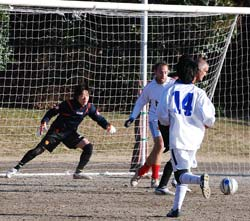
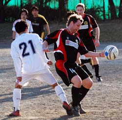
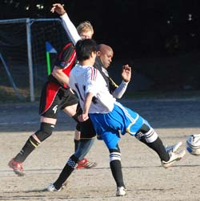

|
Oi Futo Dirty, Sunday 7th February.
As an American soccer/football player, you appreciate and try to emulate the tough and tested British style of play. After playing in Japan, you quickly realize the pace and finesse in the Japanese style. In Division 3 of the TML, all style gets thrown out the window, and you end up with a game that more resembles fugby - something in between football and rugby.
On a very windy Sunday afternoon, Pumas and Yabe FC converged on Oi Futo's pitch, aka "The Dust Bowl", for a pivotal league match that turned out to be a bruiser. Pumas desperately needed points to prevent dropping even lower in the standings, and were coming off a tough loss to Shane. Yabe sat more comfortably in the table, within striking distance of the league leaders, but couldn't afford to overlook a Pumas side who hadn't notched a W since October 2009.
Sid "Viscious" Lloyd lined the Pumas up in a 4-5-1 formation to start, which produced a good number of chances in the first 10 minutes of play. Mikhail "Poker Face" Zhilkin, and "Some People Call Me" Maurice worked the wings beautifully, pinging crosses into space and directly to Sid's feet at one point, but the finish eluded the streaky silver fox (can't single Sid out here though, if you read on). Yabe moved the ball well on the attack, but Andy and Tatsu held their ground very well in the center, with Lee and Isamu providing great support on the flanks and getting Pumas attack generated up the wings.
Ian and Nick were solid in the middle as well, easily outsizing the competition and winning control. Thomas again played brilliantly everywhere, breaking through the defense on numerous occasions, and preventing many Yabe attacks from materializing with his effort in the middle. Pumas defense was clearly up to the task, although Yabe got a few excellent crosses in themselves, all swept aside by our trusty keeper, Kieran "Hide Your Girlfriend" Hallahan. The half was tightly contested and physical, as even Sid had to carry himself off about 30 minutes through, after being mauled from behind by a Yabe defender on a header. Perhaps Yabe had the best chance with under a minute left in the 1st. A lob over Pumas defense saw a speedy Yabe player (#14?) make it to the edge of the box untouched, until Isamu "The Valkyrie" Wagner crashed in from the left and mowed him down, saving a potential goal. For his efforts, Isamu was issued a stern yellow and Yabe was awarded a direct kick from inches above the box. The resulting kick was deflected by the wall and eventually cleared, shortly followed by the whistle.
The second half again saw Pumas control the tempo and dominate possession, creating a good number of quality chances in front, only to be wasted by poor finishing. As in the first half, all of Pumas chances sailed over the top bar, with myself missing two from close range after not properly settling the ball on the hard and unpredictable dirt pitch. Had we been playing Union, Pumas would have been up 6-0 with at least two drop goals that fully cleared the uprights. Yabe also had their chances, creating a couple of breakaways on long drop kicks that bounced erratically past the defense. The real difference in the 2nd half was the play of Tatsu in center defense and Kieran the keeper. The two worked beautifully together, saving each other on more than one occasion. A less tentative Kieran is most effective and I remember two times clearly when he rushed out of the box and put his body in harms way to stop Yabe's speedy strikers. The Kid has more guts than brains, but him and Tatsu were definitely co-Men of the Match for Pumas. Not to be forgotten, George played another quality game in defense, utilizing his blazing speed to disrupt nearly every potential breakaway from Yabe.

A mostly see-saw battle with plenty of attacking was producing no goals, and frustration began to mount as the clock ticked away. Both Ian "Innocent" Warner and myself were yellow carded for blatant retaliation fouls. We were lucky not to receive reds, which would have certainly ruined a good, but unsatisfactory effort by our side. Once again, the best chance came with under a minute left, and yours truly in the perfect position to catch a great cross from the left by Maurice/Mikhail that was deflected to the edge of the box on the right. Instead of settling the awkwardly bouncing ball, I decided to have a crack, doing my best to stay on top of the ball to keep the shot low...lack of finishing skill produced another beautiful drop goal, leaving the match tied, as groans of frustration swirled quicker than dust in the wind.
Hard fought by both sides, but Pumas had more chances and should've walked away with 3 points. The winless streak continues, but there is a sense of cohesion as we play more with a regular squad, which was surely lacking in our first 6 games. Luckily, in the 3rd division it doesn't always need to be pretty and parity still reigns - Pumas are only two games back of 2nd place and can still turn things around. Only time will tell.
Report by Scott Tullis
|